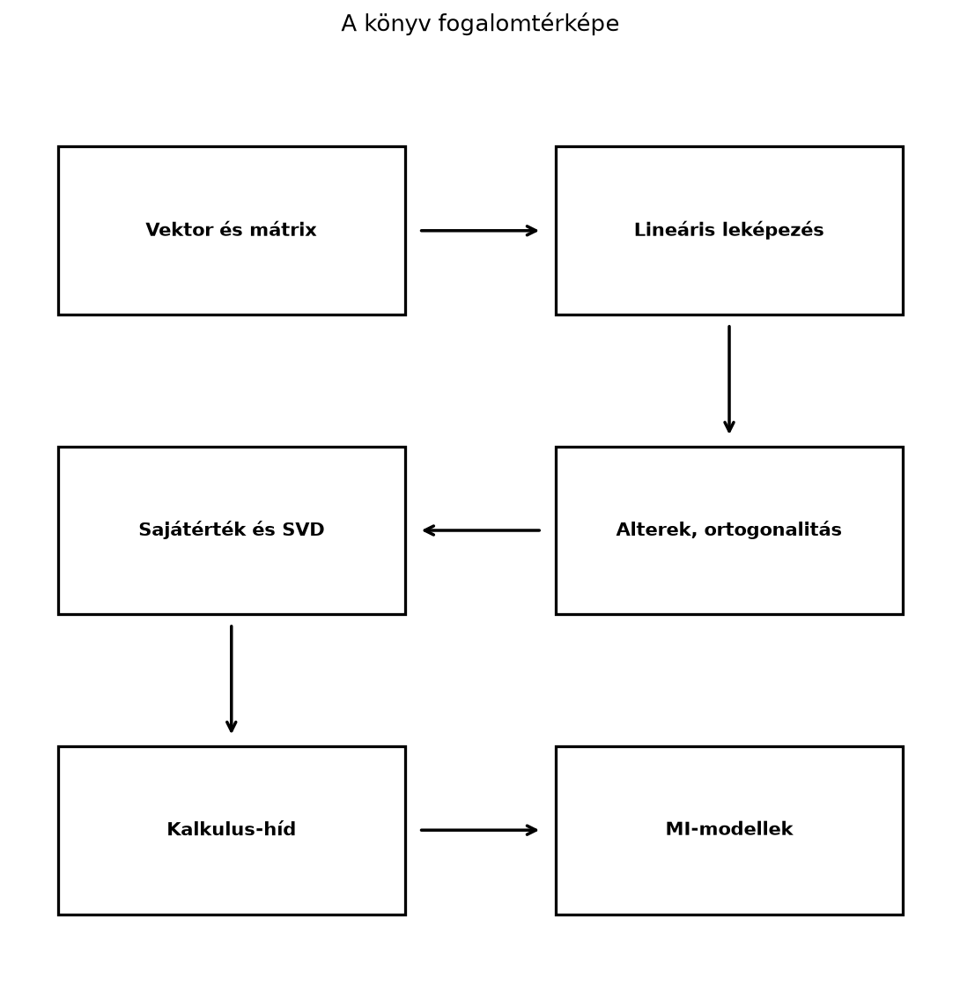

A könyv záró állomásaként érdemes egyetlen térképre feltenni mindazt, amit az előző fejezetekből összeraktál. A lineáris algebra tudása akkor válik eszközzé, ha nem elszigetelt képletekként, hanem egymásra épülő fogalmak hálójaként látod. Ez az összefoglaló abban segít, hogy felmérd, melyik csomópontokat ismered biztos kézzel, hol vannak még fehér foltok, és milyen irányba érdemes továbbmenned.
A könyv nem véletlenül haladt a vektortól a transformer-blokkig. A fogalmi lánc minden láncszeme az előzőre épül, és minden láncszem egyben válasz is egy gyakorlati kérdésre.

Definíció. A jelen összefoglalóban fogalomtérképen a könyv fő fogalmainak olyan, szándékosan egyszerűsített láncát értjük, amelynek csúcsai a fő fogalomcsoportok, az egymást követő csúcsok közötti nyilak pedig az építkezés irányát jelzik. A valódi fogalomtérkép ennél sűrűbb: a csoportok között további, itt fel nem rajzolt kereszthivatkozások is vannak (például a determináns, a Gram–Schmidt-eljárásból adódó QR-felbontás, a tenzorok és a valószínűségi alapok felé).
Az első csomópont a vektor: egyszerre geometriai nyíl és számlista. A vektorok közötti lineáris kombináció adja a kifeszített halmaz, az összefüggőség, a bázis és a dimenzió fogalmát. A mátrix ezután kétféle szerepet kap: egyrészt adattáblaként, másrészt lineáris leképezésként. A mátrix–vektor szorzás a leképezés alkalmazása, a mátrix–mátrix szorzás pedig leképezések kompozíciója.
Az alterek akkor kerülnek előtérbe, amikor azt kérdezzük: hova mutat egy leképezés, és mi tűnik el belőle? Az oszloptér, sortér, nulltér és bal nulltér, valamint a rang–nullitás tétel rendet tesz a megoldáshalmazok szerkezetében. Az ortogonalitás és a vetítés közvetlenül elvezet a legkisebb négyzetekhez és a lineáris regresszióhoz.
A sajátérték-felbontás és a szinguláris érték felbontás a mátrixot „irányokra és nyújtásokra” bontja. Ez az a pont, ahol a lineáris algebra a gyakorlati adatelemzésben elkezd „gondolkodni”: dimenziócsökkentés, alacsony rangú közelítés, pszeudoinverz, numerikus stabilitás. A determináns (9. fejezet) a térfogatarány és az invertálhatóság mérőszáma; a Gauss-elimináció és az LU-felbontás (8. fejezet) a lineáris egyenletrendszerek megoldásának alapja; a Gram–Schmidt-eljárásból adódó QR-felbontás (11. fejezet) pedig az ortonormált bázisok és a legkisebb négyzetek numerikusan stabil eszköze. A numerikus lineáris algebra (16. fejezet) ezeket az eljárásokat teszi stabillá és költség szempontjából átláthatóvá.
A kalkulus-híd ezután a lineáris leképezés fogalmát a deriválthoz köti. A gradiens és a Jacobi-mátrix segítségével értjük meg, hogyan lehet mátrixműveleteket optimalizálni, például gradiensmódszerrel. A visszaterjesztés (19. fejezet) ugyanezt a láncszabályt alkalmazza rétegről rétegre.
A statisztika és az adatelemzés (18. fejezet) a
mátrixok nyelvén fogalmazódik meg: az adatmátrix és a centrálás (18.1),
a kovarianciamátrix (18.2), a PCA (18.3) és a nagy dimenziós geometria
(18.4) mind ide tartozik. A tenzorok és tenzorműveletek
(20. fejezet) a többdimenziós tömböket és az einsum
összegzési jelölést adják, amelyre a konvolúció (21. fejezet) és a
transformer (22. fejezet) épül.
A lánc végén a MI-modellek állnak: a dense réteg affin leképezése, a konvolúció mátrixos alakja, a figyelemmechanizmus Q–K–V számítása, a LoRA alacsony rangú adaptációja mind ugyanazt a nyelvet beszélik, amelyet a könyv első felében tanultál.
A fogalomtérkép fontos üzenete: a bonyolult architektúrák nem törlik
el a lineáris algebrát, hanem rétegekbe csomagolják. Ha egy
transformer-beli (B, T, d) alakú tenzort látsz, az összes
korábbi mátrixszabály továbbra is érvényes.
Az alábbi táblázatok a leggyakrabban használt képleteket és méretviszonyokat sűrítik össze. A táblázatokban a könyv konvencióját tartjuk: a vektor oszlopvektor, a dense réteg súlymátrixa alakú, az adatmátrix sorai minták.
| Fogalom | Képlet vagy alak | Feltétel / numerikus használat | Megjegyzés |
|---|---|---|---|
| Vektor | rögzített | oszlopvektor; sorvektor | |
| Lineáris kombináció | azonos dimenziójú vektorok | a kifeszített halmaz eleme | |
| Skalárszorzat | gyakran | ||
| L2 norma | tetszőleges | hossz | |
| Koszinusz-hasonlóság | nulla vektornál nem definiált | ||
| Vetítés -t irányára | altérre általánosítható | ||
| Mátrix–vektor szorzás | , | ||
| Mátrixszorzás | belső egyezik; broadcasting nem pótolja | ||
| Inverz | négyzetes, | numerikusan solve, ne explicit inv |
|
| Determináns | négyzetes mátrix | területarány | |
| Sajátérték-egyenlet | négyzetes , | lehet komplex is | |
| SVD | minden valós | ortogonális, téglalap diagonális | |
| Normálegyenlet | mindig konzisztens; teljes oszloprangnál egyértelmű, ranghiányosnál végtelen sok megoldás, a minimális normájút a pszeudoinverz adja | numerikusan QR/SVD, ne explicit inverz | |
| Ridge-regresszió | , pozitív definit | numerikusan solve/lstsq/SVD |
|
| Dense réteg | , | ||
| Batch dense | |||
| Figyelem | , a kulcstengelyen, | , | maszk; a softmax a kulcsok felett normalizál |
| LU-felbontás | négyzetes ; sorcserével mindig; ha nincs szükség sorcserére, és | alsó, felső háromszög; megoldás: , majd | |
| QR-felbontás | , | ortonormált oszlopok, felső háromszög; Gram–Schmidt vagy Householder | |
| Sajátfelbontás (szimmetrikus) | ortogonális, valós diagonális | ||
| Pszeudoinverz | bármely | a nemnulla szinguláris értékek reciprokából | |
| Kovarianciamátrix | centrált adatmátrix, | szimmetrikus, pozitív szemidefinit; a varianciák a főátlón | |
| Softmax | numerikusan a soronkénti maximum kivonásával | ||
| Láncszabály (Jacobi) | differenciálható | a visszaterjesztés mátrixos alakja | |
| LoRA | , , | csak és tanul |
Sorcserés LU-felbontás. A táblázat általános alakja tehát , ahol a permutációs mátrix a sorcseréket rögzíti. Ha az elimináció során nincs szükség sorcserére, akkor , és a szokásos alakot kapjuk. A megoldás menete mindig ugyanaz: először az alsó háromszögrendszert oldjuk meg előrehelyettesítéssel, majd az felső háromszögrendszert visszahelyettesítéssel. Például az esetén az első pivot nulla, ezért sorcserére van szükség: Ekkor , az rendszerből , majd az rendszerből adódik; ez valóban kielégíti az egyenletet. A 8.4. alfejezet ugyanezt a konvenciót használja (LU-felbontás: az elimináció mint mátrixszorzat).
Mátrixszorzásnál a belső (kontrakciós) dimenziónak
pontosan egyeznie kell:
A
dimenzió nem pótolható broadcastinggal: a
szorzat hibás marad, mert
.
A batch-tengelyeken (a két ... részben)
viszont a NumPy broadcasting szabályai érvényesek: az egyik fél 1-es
mérete kiterjeszthető, például
érvényes és
-et
ad. Az elemenkénti műveletek broadcastingját tehát nem szabad átvinni a
kontrakciós dimenzióra.
import numpy as np
try:
np.ones((2, 1)) @ np.ones((3, 4))
except ValueError as e:
print("(2,1)@(3,4) hiba:", e)
print("(1,2,3)@(5,3,4):",
(np.ones((1, 2, 3)) @ np.ones((5, 3, 4))).shape)Várt kimenet:
(2,1)@(3,4) hiba: matmul: Input operand 1 has a mismatch in its core dimension 0, with gufunc signature (n?,k),(k,m?)->(n?,m?) (size 3 is different from 1)
(1,2,3)@(5,3,4): (5, 2, 4)Néhány gyakori shape:
| Művelet / objektum | Bemeneti shape | Kimeneti shape |
|---|---|---|
| Adatmátrix | – | ; minden sor egy minta |
| Dense réteg (batch) | , | |
| Figyelmi score | , | |
| Softmax súlyok | , broadcastolható | |
| Figyelem kimenet | , | , |
| Konvolúció | , kernel | |
| Beágyazás | token ID-k | beágyazások |
A shape-összefoglaló mellett érdemes fejben tartani: a NumPy indexelése 0-tól indul, a matematikai szövegben 1-től; a mátrix elemei az i. sor és j. oszlop elemei.
Legyen a szimmetrikus mátrix Számoljuk ki a leggyakoribb jellemzőit.
A determináns: A nyom: .
A karakterisztikus egyenlet: amiből , .
A sajátvektorok: - esetén , azaz , így például . - esetén , azaz , ahonnan , így például .
Mivel szimmetrikus, a sajátvektorok egymásra merőlegesek. A spektráltétel szerint ekkor ortogonális -val, ahol a sajátértékek diagonális mátrixa; mivel a sajátértékek pozitívak, ez egyben az SVD is, és választással. Az SVD-ben tehát ugyanezek az irányok jelennek meg, a szinguláris értékek pedig és .
import numpy as np
np.set_printoptions(precision=4, suppress=True)
A = np.array([[3.0, 1.0],
[1.0, 3.0]])
print("det =", round(float(np.linalg.det(A)), 4))
vals, vecs = np.linalg.eigh(A) # szimmetrikus mátrixra: valós, növekvő sajátértékek
print("sajátértékek =", vals)
print("sajátvektorok oszlopai:\n", vecs)
U, S, Vt = np.linalg.svd(A)
print("szinguláris értékek =", S)
print("rekonstrukció pontos?", np.allclose(U @ np.diag(S) @ Vt, A))Várt kimenet (kerekítve):
det = 8.0
sajátértékek = [2. 4.]
sajátvektorok oszlopai:
[[-0.7071 0.7071]
[ 0.7071 0.7071]]
szinguláris értékek = [4. 2.]
rekonstrukció pontos? TrueSzimmetrikus mátrixra az np.linalg.eigh a megfelelő
függvény: valós sajátértékeket ad, növekvő sorrendben (az általános
np.linalg.eig sorrendje nem rögzített, és újabb
NumPy-változatokban komplex típusú eredményt is adhat). A sajátvektorok
előjele implementációfüggő; az
irány itt
alakban jelenik meg. Az SVD rekonstrukciós hibája a gépi pontosság
nagyságrendjébe esik
(
körül), ezért pontos egyezés helyett np.allclose-zal
ellenőrizzük.
Ez a lista a könyv során leggyakrabban előforduló hibákat gyűjti össze. Ha ezeket elkerülöd, már önmagában sokat javítottál a kódjaidon és a számolásaidon.
@ helyett * használata
NumPy-ban. A * elemenkénti szorzás, a
@ mátrixszorzás. A kettő teljesen más, mégis gyakran
ugyanolyan shape-ű eredményt ad (például két négyzetes mátrixnál), ezért
a hiba csendben, hibaüzenet nélkül marad a kódban..T nem változtat
az alakon, ezért a külső szorzathoz np.outer(a, b) vagy
a[:, None] * b[None, :] kell, nem
a * b.T.np.linalg.lstsq-t vagy QR-felbontást.(B, 1)
és (B, d) alakú mátrix összeadása más, mint egy
(B, d) és (d,) alakúé.einsum-ban a
tengelycímkék sorrendjét és a szabad indexeket pontosan kell megadni; a
rossz címke megváltoztatja a transzponálást vagy a szorzást.A következő lépés attól függ, milyen célod van. Három jellegzetes profil rajzolódik ki.
Ha a modellek mögötti matematikát akarod tovább mélyíteni, elsőként a valószínűségszámítás és statisztika irányába érdemes lépned. A generatív modellek, a VAE-k és a diffúziós modellek nyelvét valószínűségi eloszlásokkal, maximum likelihoodkal és Bayes-szabállyal lehet megérteni. A konvex optimalizálás az alapfogalmakat (konvexitás, dualitás, konvergenciaráták), a numerikus optimalizálás pedig a gyakorlati módszereket adja a gradiensmódszeren túli algoritmusokhoz (Adam, RMSprop, természetes gradiens). A differenciálgeometria (például a Riemann-geometria) fogalmai később hasznosak lehetnek, például az információgeometriában és a természetes gradiens megértésénél.
Ha a cél kódolás, deployment vagy gyorsítás, akkor a
numerikus lineáris algebra és a hardverközeli
ismeretek a következő lépés. Gyakorlatban érdemes tanulmányozni
a BLAS-szinteket, a GEMM-et, a mátrixblokkolást, a memóriahasználatot, a
félpontos számításokat (fp16, bf16) és a kvantálást. A PyTorch [14], a
JAX [16] vagy a TensorFlow [15] dokumentációjában a linear,
conv2d, attention műveletek pontos
shape-konvencióit érdemes megtanulni; a keretrendszerek API-ja gyorsan
változik, ezért mindig a saját verziód dokumentációjára hagyatkozz.
Ha a cél nem a modell belső matematikájának finomítása, hanem az alkalmazás, akkor a klasszikus gépi tanulás (regresszió, osztályozás, regularizáció, fa-modellek) és a feladatra szabott neurális hálók építése a kézenfekvő út. Ehhez a lineáris algebra alapfogalmai bőven elegendők; a hiányzó láncszem általában a statisztika, a modellkiértékelés és a domainismeret.
Ajánlott források (a teljes rekordok a fejezet végén, a számozott Irodalomjegyzékben):
A gyorsan változó modelleknél, hiperparamétereknél és keretrendszer-alapértelmezéseknél mindig ellenőrizd a forrás verzióját és a megjelenés dátumát.
np.random.default_rng(0)-val,
kiszámolja a redukált SVD-jét, és a rekonstrukciós hibát
relatív módon ellenőrzi: például
vagy np.allclose(recon, A, rtol=1e-12, atol=1e-15).
Ismételd meg a
mátrixra is, és indokold, miért nem jó az abszolút
-ös
küszöb.Megoldás. A vektor egyetlen elem, amely lehet geometriai irány vagy számlista; a lineáris leképezés egy vektort egy másik vektorba visz úgy, hogy közben megőrzi az összeadást és a skalárral szorzást. Például vektor, pedig nyújtást megvalósító lineáris leképezés.
Megoldás. Egy négyzetes invertálhatóságával a következő feltételek egymással ekvivalensek: ; a rangja ; az oszlopai lineárisan függetlenek; a nulltere csak a nullvektort tartalmazza; minden esetén az egyenletrendszer egyértelműen megoldható.
Megoldás. A mátrix blokk-diagonális: az első -es blokkja , a harmadik sor és oszlop pedig csak a főátlói -est tartalmazza. Ezért , a nyom , a karakterisztikus egyenlet pedig , azaz , amiből , , . A sajátvektorok: -hez , -hoz , -hez . A mátrix szimmetrikus, mert és ; a sajátvektorok páronként merőlegesek. Mivel a mátrix szimmetrikus és minden sajátértéke pozitív, a szinguláris értékek megegyeznek a sajátértékekkel: , , .
Megoldás. Példakód:
import numpy as np
rng = np.random.default_rng(0)
A = rng.standard_normal((4, 3))
U, S, Vt = np.linalg.svd(A, full_matrices=False)
recon = U @ np.diag(S) @ Vt
err = np.linalg.norm(recon - A, 'fro')
rel = err / np.linalg.norm(A, 'fro')
print("abszolút hiba nagyságrendje: 1e%d" % int(np.floor(np.log10(err))))
print("relatív hiba nagyságrendje: 1e%d" % int(np.floor(np.log10(rel))))
print("elfogadható (rel < 1e-12)?", rel < 1e-12)
A_scaled = 1e6 * A
U2, S2, Vt2 = np.linalg.svd(A_scaled, full_matrices=False)
recon2 = U2 @ np.diag(S2) @ Vt2
rel2 = np.linalg.norm(recon2 - A_scaled, 'fro') / np.linalg.norm(A_scaled, 'fro')
print("skálázott relatív hiba nagyságrendje: 1e%d" % int(np.floor(np.log10(rel2))))
print("skálázott elfogadható?", rel2 < 1e-12)Példakimenet ebben a környezetben:
abszolút hiba nagyságrendje: 1e-16
relatív hiba nagyságrendje: 1e-16
elfogadható (rel < 1e-12)? True
skálázott relatív hiba nagyságrendje: 1e-16
skálázott elfogadható? TrueA kiírt nagyságrend géptől és LAPACK-verziótól függetlenül körül van; a pontos mantissza helyett ezért csak a nagyságrendet érdemes közölni, mert a teljes jegyű érték gépenként eltér.
Már a skálázatlan esetben is az abszolút hiba
nagyságrendű, tehát közel van az
-ös
küszöbhöz; a
esetén viszont már
nagyságrendű lehet, ami meghaladja a
-ös
abszolút küszöböt, mégsem algoritmushiba: a hiba a mátrix normájával
arányosan skálázódik. Ezért a helyes kritérium relatív, például
,
vagy np.allclose megfelelő rtol-lal; az
atol értékét a feladat skálájához kell igazítani. Egy
jelentéktelen abszolút küszöbtúllépés önmagában nem bizonyít hibás
SVD-algoritmust.
Ez a záró blokk a teljes könyv eszközeit kapcsolja össze. A feladatok nem a mintapélda számcseréi.
Fogalmi ellenpélda. A 24.3 4. megoldásában a Frobenius-normában mért abszolút rekonstrukciós hiba nagyságrendje (a kiírás csak a nagyságrendet mutatja, mert a pontos mantissza gépenként és LAPACK-verziónként változik). Miért nem jelent ez abszolút platformgaranciát, és hogyan fogalmaznál meg robusztus ellenőrzést?
Önálló számolás. Egy figyelemrétegben a skálázott score-ok egy sorra , a két value-vektor pedig és . Számold ki a softmax-súlyokat és a kimenetet.
Hibás kód javítása. Az alábbi softmax nagy
bemenetekre inf-et ad. Javítsd a numerikus stabilitást, és
indokold, miért nem változtatja meg az eltolás az eredményt.
def softmax(z):
e = np.exp(z)
return e / e.sum(axis=-1, keepdims=True)Értelmezés. A záróprojektben a tanító-, validációs és teszthalmaz szerepe különbözik. Miért nem szabad a teszt hibáját a hiperparaméterek kiválasztására használni?
Ha itt elakadtál: az 1. feladatnál nézd át a 24.3 SVD-próbáját és a 15.4 alfejezet rcond-küszöbről szóló bekezdését (Pszeudoinverz és minimális normájú megoldás); a 2. és 3. feladatnál a 22.2 alfejezet »Levezetés: miért éppen -val osztunk?« szakaszát és »Soronkénti softmax« részét (A figyelemmechanizmus: Q, K, V és a skálázott skalárszorzat); a 4. feladatnál a 24.1–24.2 projektkiértékelését és a 18.1 statisztikai alapjait.
Értékelési szempontok (a feladatok megoldása után). Az alábbi pontok a megoldások ellenőrzését segítik; a feladatok megoldása előtt ne olvasd el őket.
np.allclose relatív toleranciával.z - z.max(axis=-1, keepdims=True) eltolás után az
eredmény nagy
-re
is véges, és a softmax értéke változatlan, mert a számláló és a nevező
ugyanazzal a tényezővel skálázódik.A könyv egyetlen fogalmi láncot épített fel: a vektorok geometriai és adatos jelentésétől a mátrixokon, lineáris leképezéseken, altereken és felbontásokon át a gépi tanulás mátrixműveleteiig. A fogalomtérkép segít látni, hogy a dense réteg, a konvolúció, a figyelem és a LoRA mind ugyanazokra az alapfogalmakra épül. A képlet- és shape-táblázatok a mindennapi számoláshoz adnak gyors referenciát. A gyakori hibák listája a legtöbb csendes hibát lefedi. A továbbtanulási utak a kutatási, mérnöki és alkalmazói célok szerint válnak háromfelé. A legfontosabb, hogy ne csak felismerd a képleteket, hanem tudd is: a shape-ek, a transzponálások és a numerikus stabilitás éppúgy hozzátartoznak a lineáris algebra gyakorlatához, mint a definíciók.
Az alábbi számozott lista a fejezet szövegében név szerint
hivatkozott források központi jegyzéke. Minden mű egyetlen alaprekorddal
szerepel; a tematikus megjegyzésekben a rekordokra mutató számok állnak.
A DOI-k a https://doi.org/ előtaggal, az arXiv-azonosítók a
https://arxiv.org/abs/ előtaggal oldhatók fel. A könyv
példakódjainak referencia-környezete NumPy 2.3.5; a
keretrendszer-hivatkozások a megadott verziójú dokumentációra
vonatkoznak.
Könyvek és tankönyvek
Kurzusok és dokumentációk
np.linalg.eigh, np.linalg.svd,
np.linalg.pinv, np.linalg.lstsq,
np.convolve, np.einsum,
np.triunn.Linear, nn.MultiheadAttention,
nn.LayerNorm, nn.Conv1d,
nn.Conv2d, nn.ConvTranspose2dtf.nn.conv2d (az oldal címe a 2.16.1-es verziót
tünteti fel)Cikkek és konferenciakiadványok
Tematikus forrásmegjegyzések
Szög, merőlegesség és koszinusz-hasonlóság. A matematikai rész klasszikus lineáris algebrai tananyag, amelyet [1] és [2] tárgyal. A szemantikus keresés példájához [17] szolgál irányadó példaként; az aktuális beágyazómodellek kiválasztása és rangsora gyorsan változó gyakorlati kérdés, ezért a konkrét modellbeállításokat a mindenkori modellkártyán kell ellenőrizni. A NumPy-viselkedést [13] dokumentálja.
Ortonormált bázisok: a legkényelmesebb koordináták. A matematikai rész klasszikus lineáris algebrai tananyag, amelyet [1], [2] és a MIT OCW 18.06 kurzus [11] tárgyal. A Fourier-kitekintés a diszkrét koszinusz transzformáció standard lineáris algebrai tárgyalását követi. Az aktuális gépi tanulási alkalmazások részletei, például konkrét modellarchitektúrák dimenziói vagy könyvtár-alapértelmezések, verziófüggő gyakorlati adatok; a NumPy dokumentációja [13].
Ortogonális mátrixok: hossz- és szögtartó transzformációk. Az alfejezet matematikai tartalma klasszikus lineáris algebra, amelyet [1], [2] és [3] tárgyal. A RoPE módszer forrása [18]; az itt említett állítás a cikk alapötletére vonatkozik, a részletes levezetés a 22.4. alfejezetben (Pozíciókódolás: szinuszos kódolás és RoPE forgatásokkal) jelenik meg.
Forgatások és komplex sajátértékek röviden. A lineáris algebrai tartalmat [1] és [3] tárgyalja. A RoPE-módszer forrása [18], 3.3. szakasz; az itteni előretekintés a cikk alapötletére vonatkozik, a részletes levezetés a 22.4. alfejezetben (Pozíciókódolás: szinuszos kódolás és RoPE forgatásokkal) jelenik meg.
A spektráltétel: szimmetrikus mátrixok ortogonális
sajátbázisa. Az alfejezet matematikai tartalmát [1], [2] és [3]
tárgyalja. A NumPy np.linalg.eigh viselkedését [13]
dokumentálja; a sajátvektorok előjelváltása lehetséges.
Az SVD geometriai jelentése. A fejezet matematikai
tartalmát [1], [2] és [3] tárgyalja. A NumPy np.linalg.svd
viselkedését [13] dokumentálja; az
oszlopainak előjelválasztása a könyvtár implementációjától függően
változhat.
Lebegőpontos számok és numerikus stabilitás. A
lebegőpontos aritmetika klasszikus háttere [19]. A vegyes pontosságú
tanítás hivatkozott cikke [20]. A bfloat16 bitfelosztása a
formátum definíciójából számított érték; ipari bevezetését a Google
TPU-környezetéhez szokás kötni, ezt a szöveg jelölve közli.
Hatványiteráció és iteratív sajátérték-keresés. A lebegőpontos korlátok hátteréhez [19], a mátrixnormák és sajátérték-becslések alapjaihoz [2] szolgál. A PageRank eredeti megfogalmazása [21], a spektrálnorma-becslés gépi tanulási alkalmazása [22]. A bemutatott numerikus viselkedés a lebegőpontos aritmetika és a dokumentált könyvtári rutinok következménye; a keretrendszerek aktuális alapértelmezéseit és a futási paramétereket külön ellenőrizni kell.
Adatmátrix, átlagvektor és centrálás. A klasszikus
lineáris algebrai és leíró statisztikai tartalom (átlagvektor,
centrálás, standardizálás, min–max skálázás) tankönyvi alapanyag. A
BatchNorm eljárás eredeti leírása [23]. A NumPy mean,
std és broadcasting működését [13] dokumentálja; a várt
kimeneteket np.set_printoptions(precision=4) beállítással,
kerekítve adtuk meg, a megadott kimenet a megadott kóddal áll elő.
Főkomponens-elemzés (PCA) SVD-vel. Ez az alfejezet a 18.3. alfejezet (Főkomponens-elemzés (PCA) SVD-vel) klasszikus lineáris algebrai és PCA-ismereteire épül; kiindulópontként [1], [2] és [3] szolgál. A NumPy-kimenet a mellékelt kóddal, a bemutatott számpéldából számítva jön létre; az SVD és a sajátfelbontás előjelének bizonytalansága a szövegben jelölt módon kezelt.
Inicializálás, varianciaterjedés és normalizálás. A
Xavier/Glorot-inicializálást [24], a He-inicializálást [25] nyomán
tárgyaltuk. A keretrendszerek (például a PyTorch nn.Linear)
alapértelmezett inicializálási beállításai verzióról verzióra
változhatnak; a PyTorch-hivatkozások a 2.14-es dokumentációra [14]
vonatkoznak.
Tenzor az MI-ben: többdimenziós tömbök és tengelyek. A NumPy-műveletek leírása [13] dokumentált viselkedését feltételezi; a kódrészletek várt kimenetei kis egész számokon alapulnak, kézzel is ellenőrizhetők. A figyelemréteg shape-konvenciói az általánosan elterjedt gyakorlatot tükrözik, de az aktuális keretrendszerekben a tengelyek sorrendje eltérhet (például a PyTorch a kép batch-et , a TensorFlow/Keras alapértelmezésben sorrendben tárolja). Ezért mindig érdemes a konkrét keretrendszer dokumentációját ([14], [15]) ellenőrizni.
Külső szorzat, Kronecker-szorzat és rang-1 felbontások. A K-FAC módszer nevét és alapötletét [26] alapján említjük. A többi matematikai tartalom klasszikus lineáris algebrai tudás, amelyet a könyv a megelőző alfejezetekre építve tárgyal.
Egydimenziós konvolúció mint mátrixszorzás. A
matematikai alapok, a keresztkorreláció és a Toeplitz-mátrixos alak
klasszikus lineáris algebrai tananyag. A mélytanulási gyakorlatban
használt „konvolúció” elnevezést [12] és [7] (9.1. szakasz) használja; a
művelet matematikailag keresztkorreláció. A np.convolve a
diszkrét lineáris konvolúciót számítja, ezért tükrözi a második
operandust ([13]). A PyTorch nn.Conv1d súlytenzorának
alakja a 2.14-es dokumentáció szerint
([14]).
Kétdimenziós konvolúció, csatornák és kernelalakok.
A konvolúció matematikai leírása a lineáris algebra és a digitális
jelfeldolgozás stabil ismeretanyagán alapul. A keretrendszerek
súlytenzor-alakja a dokumentált konvenciót követi: a PyTorch
nn.Conv2d súlya
alakú ([14]), a TensorFlow tf.nn.conv2d szűrője
alakú, és a data_format csak a bemenet és a kimenet
elrendezését változtatja ([15]). A téma standard hivatkozásai: [27], [7]
(9.1. szakasz) és [12].
im2col és GEMM: a konvolúció mátrixszorzásra vezetése. A konvolúció im2col-alapú mátrixszorzásra vezetését [12] és [7] tárgyalja; a keretrendszerek aktuális alapértelmezései verziófüggők. Az itt bemutatott matematikai levezetés a mátrixszorzás klasszikus definíciójának közvetlen következménye.
Lépésköz, kitöltés és transzponált konvolúció. A
padding, stride és transzponált konvolúció mátrixos tárgyalása
klasszikus lineáris algebrai eredmény, és a bemutatott képletek
levezethetők a definíciókból. A sakktábla-jelenséghez [28] ismert
hivatkozás. A PyTorch nn.Conv2d és
nn.ConvTranspose2d súlyalakjaira vonatkozó megjegyzések a
2.14-es dokumentáció ([14]) szerinti viselkedést tükrözik; a pontos
API-viselkedés a mindenkori verzió dokumentációja szerint értendő.
1×1 konvolúció, depthwise-separable és faktorizált konvolúciók. A levezetett paraméterszám-képletek a konvolúció definíciójából közvetlenül adódnak, és klasszikus lineáris algebrai eszközökkel stabilak. A MobileNet depthwise-separable felbontását [29] 3.1. szakasza írja le; a ResNet bottleneck 1×1→3×3→1×1 elrendezését, valamint a 64→64→256 és 256→128→512 csatornaszám-példákat [30] 4.1. szakasza és 1. táblázata tartalmazza. Az itt közölt számpéldák illusztratív jellegűek, és nem egy konkrét modell implementációjából származnak.
Tokenek, beágyazási mátrix és a kimeneti réteg. A transformer felépítésének forrása [31]. A base modell és értéke a 3.1. és 3.3. szakaszban, a szókészlet az 5.1. szakaszban szerepel. A tokenizálási algoritmusok részleteit (például BPE) szándékosan nem tárgyaltuk.
A figyelemmechanizmus: Q, K, V és a skálázott
skalárszorzat. A figyelem képlete [31] 3.2.1. szakaszából
származik (skálázott pontszorzatú figyelem). A PyTorch 2.14
dokumentációja ([14]) szerint a nn.Linear súlya
(out_features, in_features), a
nn.MultiheadAttention in_proj_weight tenzora
(3*embed_dim, embed_dim), az out_proj pedig
embed_dim-ből embed_dim-be vetít. Ezek a
részletek a 2.14-es verzióra érvényesek.
Többfejű figyelem és a vetítések szerepe. A szöveg [31]-re hivatkozik; a reshape-szabályokat a 20.3. alfejezet (Reshape, transzponálás és memóriaelrendezés) tárgyalja. A NumPy-os példák egyszerű mátrixokon kézzel is ellenőrizhetők.
Pozíciókódolás: szinuszos kódolás és RoPE forgatásokkal. A szinuszos pozíciókódolást [31] vezette be; a RoPE forrása [18]. A lineáris algebrai levezetés klasszikus, a forgatómátrixok tulajdonságain alapul. A hosszú kontextusra való kiterjesztés konkrét módszerei (NTK-aware skálázás, pozícióinterpoláció, YaRN) gyorsan fejlődnek, ezért az aktuális beállításokat és pontos recepteket a hivatkozott modell dokumentációjából vagy az eredeti cikkekből kell ellenőrizni; az itt leírt gondolat csak iránymutatás.
A transformer-blokk teljes számítása és költsége. A
transformer-blokk felépítése [31] 3.1. szakaszára vezethető vissza; az
eredeti cikk a normalizálást az alréteg után alkalmazza (post-norm), a
base modell
dimenzióját a 3.3. szakasz adja. A pre-norm elrendezést többek között
[32] vizsgálja. A PyTorch 2.14 nn.LayerNorm alapértelmezése
eps=1e-5, elementwise_affine=True,
bias=True ([14]); ezek verziófüggők, ezért a könyv a
2.14-es verzióra hivatkozik. A GPT-3 legnagyobb változatának
méretadatait [41] tartalmazza.
LoRA és rsLoRA. A LoRA alacsony rangú adaptációjának eredeti leírása [39]. A frissítés alakja , ahol és , és a tanulás csak ezt a két kicsi faktort érinti. Az skálázás gyakorlati indoklását és az változatot, amely a rang növelésekor stabilabb frissítéseket céloz, [40] tárgyalja. A részletes levezetést és a 23.1. alfejezet példáit (LoRA: alacsony rangú adaptáció finomhangoláshoz) érdemes együtt olvasni. A gyakorlati hiperparaméterek (a rang, az és a célzott rétegek) modellenként változnak.
Kvantálás lineáris algebrai szemmel. A bemutatott int8 kvantálás klasszikus leírása [33]. A fenti matematikai képletek a definícióból közvetlenül levezethetők. A konkrét ipari kvantálási eszközök int4/int8 konfigurációi és per-channel alapértelmezései verziófüggők.
Gyors mátrixszorzás: blokkolás, memória és hardver.
A roofline-modell klasszikus forrása [34]. A gyorsítótár-működés és a
mátrixszorzás optimalizálásának hardveres háttere [10]-ben található. A
BLAS/GEMM viselkedése gyártónként és könyvtárverziónként változik; a
NumPy @ művelet mögötti konkrét BLAS-hívás a telepített
NumPy-változattól függ ([13]). A fejezetben szereplő
és
értékek illusztratívak, nem mért adatok.
Beágyazás-alapú keresés és vektor-adatbázisok. Ez az alfejezet klasszikus lineáris algebrai ismeretekre, valamint a korszerű beágyazás-alapú keresés elvi alapjaira épül. A koszinusz-hasonlóság és a mátrixszorzás tárgyalása [2] és [1] nyomán tanítható. A véletlen vetítés Johnson–Lindenstrauss-lemmája [35]. A HNSW elvét [36] tárgyalja. Az IVFADC index klasszikus hivatkozása [37]; a képi szavak invertált indexének korábbi, rokon ötlete [38]. A termékek és a konkrét beágyazómodellek paraméterei gyorsan változó gyakorlati adatok, ezért azokat ebben a fejezetben nem tárgyaljuk. A bemutatott NumPy-kimenet a megadott kóddal, a kidolgozott számpéldából számolva jön létre.
Záróprojekt I: többrétegű háló tisztán NumPy-ban. Ez az alfejezet a Visszaterjesztés (backpropagation) mátrixalakban, az Inicializálás, varianciaterjedés és normalizálás és a 17.5. alfejezet (Gradiensmódszer: optimalizálás lineáris regresszión) anyagára épül. A He-inicializálás [25] munkájából származik, de a keretrendszerek aktuális alapértelmezéseit itt nem állítottuk ellenőrzött tényként. A NumPy-függvények a [13] dokumentált, stabil API-jából valók; a konkrét futási eredmények a verzió és a hardver függvényében kissé eltérhetnek.
Záróprojekt II: figyelemréteg és mini
transformer-blokk. A transformer-blokk felépítése [31] cikkére
vezethető vissza. A RoPE [18] cikkéből származik. A pre-norm sorrend és
a LayerNorm paraméterezése modellenként eltérhet; a PyTorch 2.14
nn.LayerNorm alapértelmezése eps=1e-5,
elementwise_affine=True, bias=True ([14]), de
ezek verziófüggők. A NumPy kód a könyv környezetében rögzített 2.3.5-ös
API-t használja ([13]); a np.einsum és a
np.triu viselkedése ebben a verzióban stabil.
Ez a függelék a könyv kulcsfogalmait rögzíti egységes magyar és angol névvel, alfabetikus sorrendben. A képleteket és a shape-öket a záró összefoglaló „Képlet- és shape-összefoglaló” szakasza tartalmazza; ez a fogalomtár a definíciók és a megkülönböztetések gyors referenciája.
| Magyar | English | Jelentés / megkülönböztetés |
|---|---|---|
| affin leképezés | affine map | lineáris leképezés plusz eltolás |
| alacsony rangú közelítés | low-rank approximation | az SVD első komponenseivel való közelítés |
| altér | subspace | zárt részhalmaz összeadásra és skalárszorzásra |
| bal nulltér | left null space | az megoldásainak tere |
| bázis | basis | független, kifeszítő vektorrendszer |
| Cauchy–Schwarz-egyenlőtlenség | Cauchy–Schwarz inequality | |
| Cholesky-felbontás | Cholesky decomposition | pozitív definit mátrix felbontása |
| dense réteg | dense / fully connected layer | affin réteg |
| determináns | determinant | terület-/térfogatarány és invertálhatóság mérőszáma |
| diagonalizálás | diagonalization | |
| dimenzió | dimension | a bázis elemszáma |
| Einstein-összegzés | Einstein summation (einsum) |
indexek feletti összegzés tömör jelölése |
| figyelem Q/K/V | query, key, value | a figyelem három vetített reprezentációja |
| főkomponens-elemzés | principal component analysis (PCA) | kovariancia főirányai SVD-vel |
| Gauss-elimináció | Gaussian elimination | sorok elemi átalakításai a megoldáshoz |
| gradiens | gradient | skalárfüggvény parciális deriváltjainak vektora |
| Gram–Schmidt-eljárás | Gram–Schmidt process | ortonormált bázis készítése |
| homogén koordináta | homogeneous coordinate | eltolás mátrixszorzásként való kezelése |
| im2col / GEMM | im2col / GEMM | a konvolúció mátrixszorzássá alakítása |
| inverz mátrix | inverse matrix | |
| Jacobi-mátrix | Jacobian matrix | vektorértékű függvény deriváltmátrixa |
| kifeszített halmaz | span | az összes lineáris kombináció halmaza |
| kondíciószám | condition number | a relatív hiba felnagyítása lineáris rendszerben |
| konvolúció | convolution | lokális kernel és bemenet szorzata; mátrixszorzásként is |
| koszinusz-hasonlóság | cosine similarity | a szög koszinusza; normalizált skalárszorzat |
| kovarianciamátrix | covariance matrix | centrált adatmátrix szorzata |
| kvadratikus forma | quadratic form | |
| kvantálás | quantization | súlyok kisebb pontosságú ábrázolása |
| láncszabály | chain rule | összetett függvény deriválása mátrixszorzással |
| legkisebb négyzetek | least squares | túlhatározott rendszer közelítő megoldása |
| lineáris függetlenség | linear independence | csak triviális kombináció ad nullát |
| lineáris kombináció | linear combination | vektorok skalárral vett összege |
| lineáris leképezés | linear map | összeadást és skalárszorzást megőrző függvény |
| LoRA | low-rank adaptation | alacsony rangú finomhangolási adapter |
| LU-felbontás | LU decomposition | (sorcserével ) |
| mátrix | matrix | kétdimenziós számrendezett tömb; lineáris leképezés reprezentációja |
| mátrixszorzás | matrix multiplication | belső dimenzió szerinti összegzés |
| norma | norm | vektor hossza; L2, L1 és változat |
| normálegyenlet | normal equation | |
| nulltér | null space | az megoldásainak tere |
| ortogonális mátrix | orthogonal matrix | |
| ortonormált bázis | orthonormal basis | egységnyi, egymásra merőleges bázis |
| oszloptér | column space | az oszlopok kifeszített altere |
| pozitív definit | positive definite | minden nemnulla vektorra pozitív kvadratikus forma |
| projekciós mátrix | projection matrix | altérre vetítő idempotens mátrix |
| pszeudoinverz | pseudoinverse | ranghiányos és téglalap mátrixokra |
| QR-felbontás | QR decomposition | |
| rang | rank | független sorok/oszlopok száma |
| rang–nullitás tétel | rank–nullity theorem | |
| ridge-regresszió | ridge regression | -regularizált legkisebb négyzetek |
| RoPE | rotary position embedding | forgatással kódolt relatív pozíció |
| sajátérték | eigenvalue | skalárja |
| sajátvektor | eigenvector | irány, amelyet a leképezés nem forgat el |
| skalár | scalar | egyetlen szám; a vektortér elemei feletti szorzó |
| skalárszorzat | dot / inner product | ; hosszt és szöget ad |
| softmax | softmax | exponenciális normalizálás valószínűséggé |
| sortér | row space | a sorok kifeszített altere |
| spektráltétel | spectral theorem | szimmetrikus mátrix ortogonális sajátbázisa |
| szinguláris érték felbontás | singular value decomposition (SVD) | |
| tenzor | tensor | többdimenziós tömb; tengelyekkel és shape-mel |
| többfejű figyelem | multi-head attention | több párhuzamos figyelemfej összefűzése |
| transzponált | transpose | sorok és oszlopok felcserélése |
| vektor | vector | irányított mennyiség vagy számlista; a könyv oszlopvektort használ |
| vektorkeresés | vector search | beágyazások közötti hasonlóság alapú keresés |
| vetítés | projection | vektor felbontása egy irányra és arra merőleges részre |
| visszaterjesztés | backpropagation | a láncszabály mátrixos alkalmazása a gradienshez |
A könyv célprofilja: matematika iránt érdeklődő programozó, aki a vektoroktól a mátrixműveleteken és felbontásokon át eljut a neurális hálók, a CNN-ek és a transformer-architektúrák mátrixos leírásáig. A térkép tíz kompetenciát és tíz ellenőrző pontot rögzít; a pontok a hozzájuk tartozó blokk végén egy önálló feladattal zárulnak.
Belépés. Középiskolai algebra, koordináta-geometria és alapvető szögfüggvények; programozási rutin (változó, függvény, ciklus, tömb). Nem szükséges előzetes lineáris algebra, kalkulus vagy mélytanulási ismeret.
Kilépés. A tanuló önállóan felírja és értelmezi a mátrixfelbontásokat, megold egy legkisebb négyzetes feladatot, implementál egy kétrétegű hálót és egy figyelemréteget NumPy-ban, valamint megmagyarázza a shape-ek, a transzponálás és a numerikus stabilitás szerepét.
| # | Kompetencia | Mit tud a tanuló? | Ellenőrző pont | Bizonyíték |
|---|---|---|---|---|
| 1 | Vektorok és alapműveletek | Kiszámolja a skalárszorzatot, a normát, a szöget és a vetítést; érti a lineáris kombinációt | l013 |
kézi és NumPy-s számítás, Cauchy–Schwarz-ellenőrzés |
| 2 | Függetlenség, bázis, altér | Eldönti a függetlenséget, bázist vált, érti a dimenziót | l016 |
bázis- és altérfeladat, koordinátaszámítás |
| 3 | Mátrixok és lineáris leképezések | Összeszoroz mátrixokat, felismeri a transzformációt és a kompozíciót | l024 |
mátrixszorzási és affin transzformációs feladat |
| 4 | Lineáris rendszerek | Gauss-eliminál, LU-felbontást használ, érti a rang és a megoldásszám kapcsolatát | l028 |
kézi elimináció + NumPy-ellenőrzés |
| 5 | Inverz és determináns | Kiszámolja a determinánst, eldönti az invertálhatóságot, érti a geometriai jelentést | l032 |
determináns- és invertálhatósági feladat |
| 6 | Alapterek és ortogonalitás | Meghatározza az oszlop-, sor- és nullteret; ortonormált bázist készít | l039 |
rang–nullitás feladat, Gram–Schmidt/QR |
| 7 | Legkisebb négyzetek és sajátértékek | Felírja a normálegyenletet, regularizál, diagonalizál | l047 |
regressziós feladat, sajátérték-számítás |
| 8 | SVD és numerika | Érti az SVD-t, az alacsony rangú közelítést és a kondíciószámot | l057 |
SVD-alapú tömörítés, stabilitási elemzés |
| 9 | Kalkulus, adatelemzés, MI | Gradienst és Jacobi-mátrixot számol, PCA-t és dense réteget ír fel | l070 |
kézi gradiens + NumPy-lab, PCA/batch shape |
| 10 | Tenzorok, CNN, transformer, projekt | Kezeli az einsum-ot, a konvolúciót, a figyelmet és a
LoRA-t; záróprojektet készít |
l091 |
két NumPy-záróprojekt, shape- és gradiens-tesztek |
l000–l024. A vektoros és mátrixos szemlélet
nélkül a későbbi felbontások nem értelmezhetők.l025–l039. A Gauss- elimináció, a rang és az
ortogonalitás a numerikus munka alapja.l040–l057. A legkisebb négyzetek, a
sajátfelbontás és az SVD együtt adják a modellezés eszköztárát.l058–l091. A gradiens, a tenzorok, a
konvolúció és a figyelem a záróprojekt felé vezetnek.l089 és l090
követelményei szerint készíts tesztet: gradient check, shape-assert és
determinisztikus seed.Ezek a tervben szereplő kiindulópontok, nem ebben a tervben ellenőrzött források.
Fejezetenként közös forráscsomag. A fejezet-leírás fókusza és URL-jei az elsődlegesek; az alábbi lista referencia-térkép, nem minden fejezetben feldolgozandó teljes lista. Minimum három releváns forrás szükséges, olvasott fejezet/tétel/képlet szerint. Egyetemi tankönyv és kurzusjegyzet, eredeti ML-cikk és hivatalos könyvtár-dokumentáció külön kezelt. A jelölésbeli eltéréseket (sor- vs. oszlopvektor, W x vs. x W, elrendezési konvenció a mátrixkalkulusban) mindig jelölni kell. Továbbtanulás further_reading; hiány gaps; verzió, mért futásidő vagy benchmark nem található ki.
Tankönyvek és kurzusok (szabadon elérhetők):
Eredeti cikkek:
Dokumentáció: